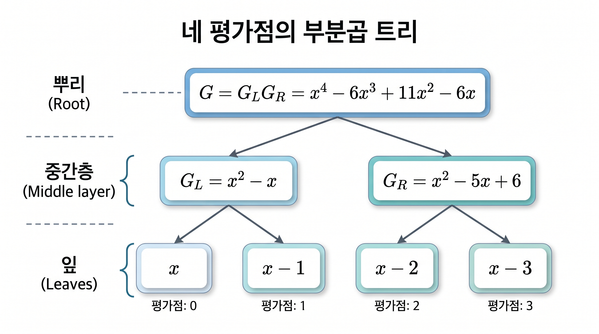
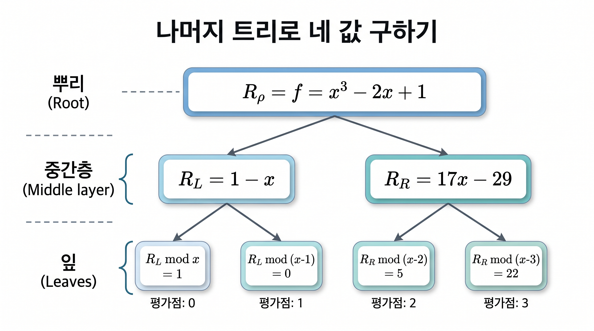

정의 8.3.1 다중점 평가.
다항식 \(f\in\mathbb F[x]\)와 평가점 \(a_0,\ldots,a_{n-1}\in\mathbb F\)에 대하여, 순서 있는 값들의 목록
\begin{gather*}
(f(a_0),\ldots,f(a_{n-1}))
\end{gather*}
을 구하는 문제를 다중점 평가
라고 합니다. 여기서 \(n\geq 1\)이며, 평가점들이 서로 다를 필요는 없습니다.


![Runestone Academy logo]()
![MathJax logo]()